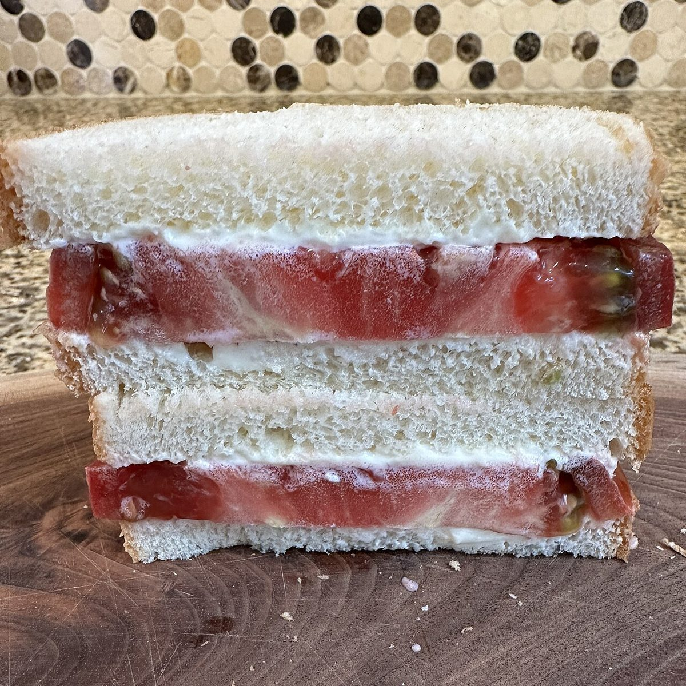
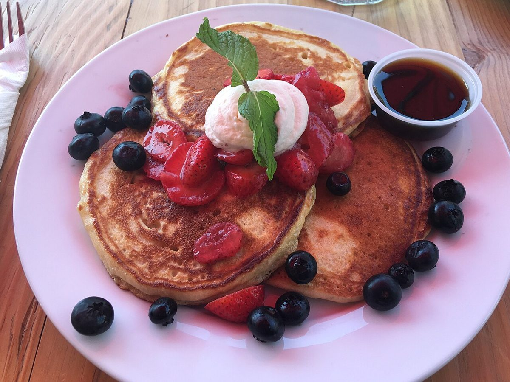
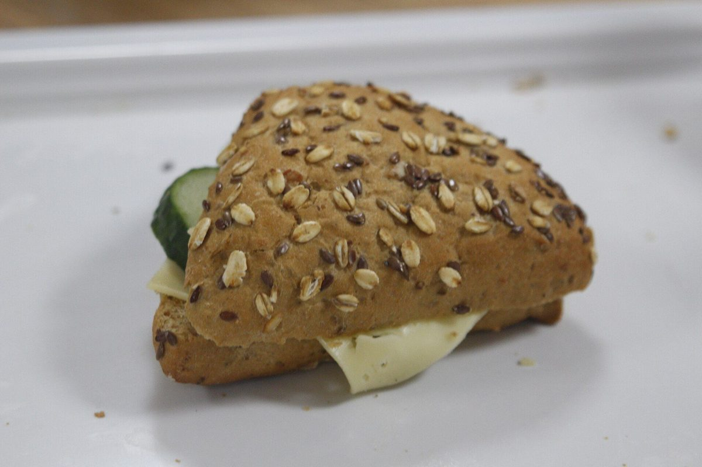

食堂・喫茶 / 岩手県遠野市
CocoKana
岩手県遠野市にある「食堂喫茶CocoKana」のご案内ページです。営業時間やメニューなど、詳しいことは準備中。電話は 0198-62-4384、Instagramでも情報を確認できます。

制作側の連想
一枚の紙を、折りたたむように。
屋号の由来は分かりません。制作側は「食堂」と「喫茶」という二つの言葉が並ぶ屋号から、一枚の紙を半分に、さらに半分に折って形を変えていく「紙ナプキンの折り方」を連想しました。このサイトは、ページを一折ずつめくる作りにしています。制作側の連想で、お店の理念・由来とは無関係です。
折り目をひらく
イメージ写真、六枚。
写真は遠野市のお店・商品ではありません。国外または撮影地不明のフリー素材で、雰囲気を伝えるためのイメージです。

サンドイッチ(イメージ) 
カップとソーサー(イメージ) 
パンケーキ(イメージ) 
三角のサンドイッチ(イメージ) 
ラテアート(イメージ) - 六折
ご案内
確認できたことだけ
| 所在地 | 〒028-0523 岩手県遠野市中央通り２−１ |
|---|---|
| 電話 | 0198-62-4384 |
| 営業時間 | 準備中 |
| 定休日 | 準備中 |
| メニュー・価格 | 準備中 |
| ご予約 | 準備中 |
| 駐車場 | 準備中 |
| SNS | Instagram @cocokana.tono |